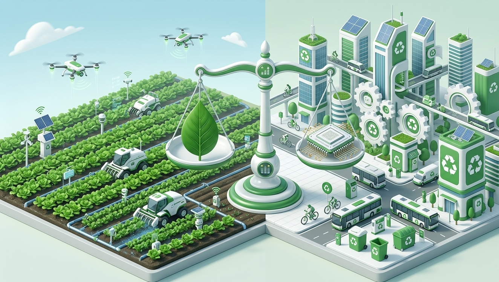

O que é equilíbrio?
Teoricamente, o conceito de equilíbrio entre produção e meio ambiente envolve o uso adequado de insumos químicos. No entanto, o assunto vai além do cuidado técnico nas plantações; ele esbarra no comportamento da sociedade moderna. Muitas empresas estimulam o consumo impulsivo, criando uma necessidade de posse que ignora o custo ambiental. Esse ciclo de compra resulta, indiretamente, na poluição, já que o descarte inadequado de resíduos industriais em rios e esgotos compromete a vida animal e humana. Somado a isso, há o uso indiscriminado de componentes químicos nas lavouras. Embora tragam resultados imediatos, a longo prazo tornam-se uma “avalanche” de prejuízos, gerando alimentos que podem afetar a saúde pública de forma silenciosa. Em suma, para mitigar esses problemas, as fábricas devem gerenciar rigorosamente seus descartes, enquanto os agricultores precisam regular a dosagem de substâncias e proteger, com cautela, os lençóis freáticos.